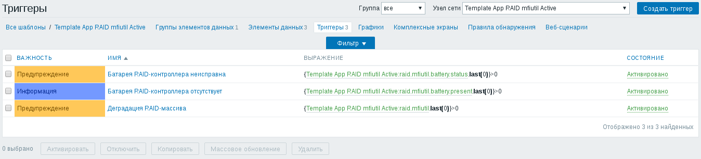

В этой статье речь пойдёт о RAID-контроллерах FreeBSD, которые управляются драйвером mfi(4). На указанной странице руководства написано, что это драйвер контроллера LSI MegaRAID SAS. На самом же деле я некоторое время использовал описанную ниже схему для RAID-контроллера Intel RS2WC040. Об этом контроллере я ранее уже писал в трёх других статьях:
Для проверки состояния RAID-контроллера нам понадобятся настроенный Zabbix-агент и пакет sudo.
При помощи команды visudo разрешим пользователям из группы zabbix выполнять от имени пользователя root команды для проверки состояния RAID-массивов и батареи RAID-контроллера:
%zabbix ALL=(ALL) NOPASSWD:/usr/sbin/mfiutil show volumes, \
/usr/sbin/mfiutil show adapter, \
/usr/sbin/mfiutil show battery
Впишем в файл конфигурации Zabbix-агента /usr/local/etc/zabbix24/zabbix_agentd.conf соответствующие строки:
UserParameter=raid.mfiutil,sudo /usr/sbin/mfiutil show volumes | fgrep RAID | fgrep -vc OPTIMAL UserParameter=raid.mfiutil.battery.present,sudo /usr/sbin/mfiutil show adapter | fgrep 'Battery Backup' | grep -vc present UserParameter=raid.mfiutil.battery.status,sudo /usr/sbin/mfiutil show battery | fgrep Status | fgrep -vc normal
Первая команда возвращает количество неисправных RAID-массивов, вторая - количество контроллеров без установленной батареи, третья - количество батарей, не находящихся в статусе normal. То есть, если любое из значений отличается от нуля, то имеются проблемы.
После внесения изменений в конфигурацию Zabbix-агента, не забудьте его перезапустить:
# /etc/init.d/zabbix-agent restart
Я подготовил два шаблона для контроля состояния RAID-контроллера:
В шаблоне есть три элемента данных. Один контролирует целостность RAID-массивов, второй - наличие батарей в контроллерах, третий - состояние каждой из батарей:

Каждому из упомянутых элементов данных соответствует один триггер:
Почему я оговорился о том, что использовал описанную схему только "некоторое время"? Потому что через некоторое время команда mfiutil переставала работать, выводя в ответ такие вот ошибки:
# mfiutil show volumes mfiutil: Failed to get volume list: No such file or directory # mfiutil show battery mfiutil: Failed to get capacity info: No such file or directory
Это при том, что драйвер загружен в ядро и файлы устройства на месте:
# kldstat -v | grep mfi 153 mfi/mfisyspd 152 mfi/mfid 151 pci/mfi # ls /dev/mfi* /dev/mfi0 /dev/mfid0 /dev/mfid0s1 /dev/mfid0s1a /dev/mfid0s1b
При каждом запуске команды mfiutil в журнале /var/log/messages появляются ошибки такого вида:
kernel: mfi0: IOCTL 0xc0404366 not handled
Возможно дело в том, что я использую не официальный драйвер, а с официальными драйверами, которые были добавлены в систему в последующих релизах, такой проблемы нет.
Есть сервер, где используется RAID-контроллер немного другой модели - Intel RS2BL040. Эта модель RAID-контроллера поддерживается официальным драйвером и на этом сервере многократные вызовы команды mfiutil не приводят к подобным ошибкам. Но в чём точно дело - в драйвере или в модели контроллера, я с уверенностью сказать не могу. Полагаю, что дело всё же в драйвере. В таком случае, скорее всего, описанная выше схема контроля не будет приводить к проблемам на системах, использующих официальный драйвер mfi.
После того, как я столкнулся с этой проблемой, вместо команды mfiutil я стал использовать команду megacli, собранную из порта sysutils/megacli. Утилита megacli работает безотказно. Правда, описывать контроль RAID-массива с её помощью я не стану - результат получился слишком неуклюжим.